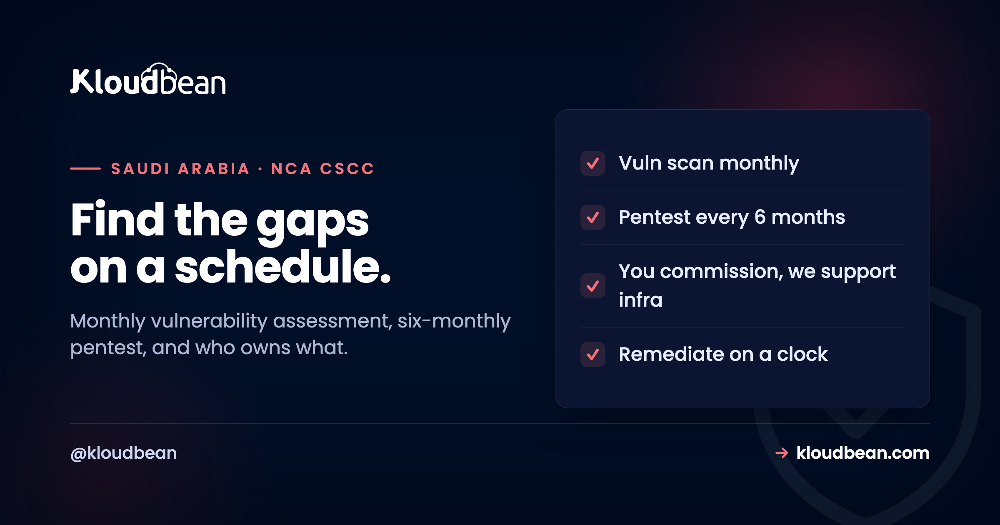

NCA CSCC Vulnerability Assessment and Penetration Testing: The Cadence That Matters

Two of the most specific requirements in the NCA's Critical Systems Cybersecurity Controls are about deliberately finding your own weaknesses before an attacker does, and doing it on a fixed schedule rather than once and never again. Vulnerability assessment, monthly. Penetration testing, every six months. People routinely confuse the two, run one and call it the other, or do a single test at launch and consider the box ticked. All three of those are mistakes a reviewer will catch. This guide separates the two activities, explains the cadence the CSCC actually mandates, and is honest about the part that surprises teams most: who is responsible for which piece.
The NCA CSCC requires two distinct, recurring activities. Vulnerability assessment (control 2-9-2) must run at least monthly: automated scanning that finds known weaknesses like unpatched software and misconfigurations. Penetration testing (control 2-10-2) must run at least every six months: skilled testers actively attempting to breach the system to find what a scanner cannot. They are complementary, not interchangeable, and both must be recurring rather than one-off. The honest responsibility split matters: the organisation commissions and funds penetration tests and owns application-layer findings, while a managed cloud provider supports the infrastructure side, facilitating access, providing architecture documentation, running infrastructure vulnerability assessments, and remediating infrastructure-layer findings. Finding issues is only half the job; remediation on a defined timeline is the rest.
Vulnerability assessment and penetration testing are not the same thing
The confusion between these two is so common that it is worth being blunt about the difference before anything else.
A vulnerability assessment is broad and mostly automated. Scanning tools check your systems against databases of known weaknesses, unpatched software, missing security updates, misconfigurations, weak settings, and produce a list of what they found. It is wide coverage, low cost, and fast, which is exactly why the CSCC wants it done frequently. A penetration test is narrow and human. Skilled testers actively try to break in, chaining weaknesses together, thinking like an attacker, and finding the things a scanner never will, such as flawed business logic or a combination of small issues that add up to a real breach. It is deeper, more expensive, and slower, which is why it is required less often. The simplest way to hold the distinction: a vulnerability assessment tells you which doors are unlocked; a penetration test is someone actually trying to get in through them. You need both, because each sees what the other misses.
The cadence the CSCC mandates
The schedule is the part that is genuinely specific, so it is worth pinning down exactly.
Control 2-9-2 requires vulnerability assessment at least monthly. Control 2-10-2 requires penetration testing at least every six months. The word that matters in both is "least," these are floors, not ceilings, and the reason for the recurrence is simple: your systems change, new vulnerabilities are discovered constantly, and a clean assessment in January says nothing about your exposure in June. A single test at launch, the way many projects treat security, is explicitly not enough for a critical system. Alongside these, the framework's patching cadence (control 2-3-1-3) requires internet-facing critical systems to be patched monthly and internal ones quarterly, which is the natural partner to assessment: you scan monthly, you patch monthly, and the two keep each other honest. The cadence is not bureaucracy for its own sake, it is the acknowledgment that security is a moving target and a point-in-time check ages badly.
The patching half of that pairing is the piece you can hand over. On a managed enterprise engagement Kloudbean runs OS patching monthly on internet-facing production and quarterly on internal QA and development machines, with critical vulnerabilities taken out of the queue and remediated immediately, which is the shape 2-3-1-3 asks for. Your scan cadence still has to be yours to prove, because the finding list spans your application too.
Who does what: the split that surprises people
This is where teams get caught out, because the responsibility does not all sit in one place, and assuming it does leaves gaps.
Penetration testing, in particular, is something the organisation commissions and funds. A hosting provider does not decide to have your systems attacked, you engage qualified testers, define the scope, and pay for it, because it is your system being tested and your risk being measured. What a managed cloud provider does is support that work at the infrastructure layer: facilitating the access the testers need, providing architecture documentation so the test is informed rather than blind, and, crucially, remediating the findings that fall on the infrastructure side. On the vulnerability-assessment side, a managed provider can run infrastructure vulnerability assessments and remediate infrastructure findings, while your overall programme, including the application layer, has to meet the monthly cadence the control requires. The honest summary: you own commissioning the pentest and the application-layer findings; the platform supports the test and owns the infrastructure-layer findings. Neither party can do the other's half, and a critical-systems review expects both halves to be covered.
One detail to reconcile early rather than at review. Kloudbean's standard infrastructure vulnerability assessment on a managed engagement runs quarterly, and control 2-9-2 sets a monthly floor for the programme as a whole. Those two numbers are not the same number, so scope the gap deliberately: either the infrastructure cadence is raised for the systems classed as critical, or your own monthly scanning covers the interval. Nobody wants to find that arithmetic in an audit finding.
Remediation is the actual point
It is easy to treat the assessment as the deliverable. It is not. The fix is.
A vulnerability report that sits in a drawer is arguably worse than never scanning, because now you can demonstrably prove you knew about a weakness and did nothing, which is exactly what a regulator or a plaintiff would want to establish. The controls are not satisfied by finding issues; they are satisfied by finding and remediating them on a defined timeline, with critical vulnerabilities addressed promptly rather than queued behind feature work. This is where the patching cadence and the assessment cadence meet: the monthly scan finds the newly-disclosed vulnerability, and the monthly patch cycle closes it. Track findings to closure, prioritise by severity, and keep the evidence, because being able to show a reviewer the full loop, found, prioritised, fixed, verified, is what turns an assessment programme from a checkbox into a genuine control.
Split the closure tracking by layer or it stalls. Infrastructure findings, the unpatched package, the permissive firewall rule, the drifted OS configuration, are remediated by Kloudbean on a managed engagement and come back to you as a report. Application findings land in your backlog and compete with feature work, which is exactly why they are the ones that age. Give them a severity clock in writing before the first report arrives.
The cheapest programme that still satisfies 2-9-2 and 2-10-2
Most teams overbuild the tooling and underbuild the process, then fail on evidence. If budget is tight, this is the minimum that genuinely holds up, in the order you should stand it up.
- Write the scope down first. Which systems are classed as critical, and which components sit inside them. Everything else in this list depends on that list, and it costs nothing but an afternoon.
- Monthly authenticated scanning of the whole scope. One tool, run on a calendar entry, output archived. Unauthenticated external scans are cheaper and much weaker, since they miss the unpatched package sitting behind your load balancer.
- A severity clock in writing. Critical fixed immediately, high within a defined number of days, and so on. Without this the reports accumulate and 2-9-2 quietly becomes a scanning habit rather than a control.
- A patch cadence that matches the scan cadence. Monthly on internet-facing, quarterly internally, per 2-3-1-3. Scanning monthly and patching annually is the most common way to look compliant and be exposed.
- One properly scoped penetration test every six months, not two rushed ones. Give the testers architecture documentation and real access. A blind black-box test on a critical system spends most of its budget rediscovering your network layout.
- A findings register that tracks to closure. Found, prioritised, fixed, verified, dated. This is the artefact a reviewer actually asks for, and it's the one nobody has.
Of those six, Kloudbean covers the infrastructure share on a managed enterprise engagement: infrastructure vulnerability assessments and remediation of infrastructure findings, OS and stack patching on the cadence above, and pentest support through access facilitation, architecture documentation, and remediation of the infrastructure findings a test surfaces. Delivered as managed reports, on a dedicated cloud account, in-Kingdom on the Dammam region where residency requires it.
Three of those six lines no host fixes, and that includes us. We can't commission or fund your penetration test, because it's your system and your risk being measured, and a provider choosing to have your systems attacked would be a strange arrangement. We can't remediate a flaw in your application code, since we didn't write it and don't deploy on your behalf. And we can't own the register or the severity clock, which are governance, not configuration. If a provider tells you they handle vulnerability management end to end for a critical system, ask which of those three they mean, because it can't be any of them.
Next in this area
This sits within the wider framework covered in the NCA CSCC guide, and preparation is in the critical systems hosting checklist. For the automated-scanning side at the container level, container security scanning; for a self-assessment you can run yourself, the security audit checklist. Related network controls are in CSCC network segmentation.
The technical controls, documented.
Kloudbean delivers the infrastructure alignment behind these controls on managed enterprise engagements: centralised logging, immutable retention, private database access, MFA, and in-Kingdom hosting where required. Certification is assessed against your organisation, so governance and application work stay with you.
- ✓ In-Kingdom (Dammam) available
- ✓ Centralised logging
- ✓ Immutable log storage
- ✓ Private database access
- ✓ MFA and least privilege
- ✓ Automatic backups
- ✓ Evidence as managed reports
FAQ
What is the difference between a vulnerability assessment and a penetration test?
A vulnerability assessment is broad, mostly automated scanning that checks systems against databases of known weaknesses like unpatched software and misconfigurations, producing a list of findings. A penetration test is narrow and human, with skilled testers actively trying to break in and chaining weaknesses together to find what a scanner cannot, such as flawed business logic. One tells you which doors are unlocked; the other is someone trying to get in through them. They are complementary, and a critical system needs both.
How often does CSCC require vulnerability assessment and penetration testing?
The NCA CSCC requires vulnerability assessment at least monthly (control 2-9-2) and penetration testing at least every six months (control 2-10-2). Both are floors rather than ceilings, and both must be recurring rather than one-off, because systems change and new vulnerabilities appear constantly. A single test at launch does not satisfy the controls. The monthly assessment cadence pairs with the framework's monthly patching requirement for internet-facing critical systems, so scanning and fixing keep pace with each other.
Who is responsible for commissioning penetration tests?
The organisation is. You engage qualified testers, define the scope, and fund the test, because it is your system and your risk being measured, not something a hosting provider initiates. A managed cloud provider supports the work at the infrastructure layer by facilitating access, providing architecture documentation so the test is informed, and remediating infrastructure-layer findings. The commissioning, funding, and application-layer findings remain the organisation's responsibility, which is a split teams often do not expect until they plan the engagement.
Does a managed host run these tests for me?
A managed host supports rather than replaces your programme. It can run infrastructure vulnerability assessments, patch the underlying stack, and remediate infrastructure-layer findings, and it supports penetration tests with access and architecture documentation. But it does not commission or fund your penetration tests, and it cannot fix vulnerabilities in your application code. Your overall assessment programme, including meeting the monthly cadence at the application layer and tracking findings to closure, stays with you.
Why does the assessment have to be recurring?
Because security is a moving target. Your systems change as you deploy, dependencies update, and new vulnerabilities are disclosed constantly, so a clean assessment in one month says little about your exposure the next. A point-in-time check ages badly, which is why the controls specify monthly assessment and six-monthly testing rather than a single review. Recurrence is what keeps the picture current and catches newly-introduced or newly-discovered weaknesses before they are exploited.
What happens if I find a vulnerability but do not fix it?
That is arguably worse than not scanning, because you now have documented proof you knew about a weakness and left it open, which is exactly what a regulator or a claimant would want to establish. The controls are satisfied by finding and remediating issues on a defined timeline, with critical ones addressed promptly, not merely by finding them. Track findings to closure, prioritise by severity, and keep the evidence of the full loop from discovery to verified fix.
Is container scanning the same as a vulnerability assessment?
Container image scanning is one specific type of automated vulnerability scanning, focused on the known vulnerabilities in the packages inside a container image. It is a useful part of a vulnerability-assessment programme but not the whole of it, since a full assessment also covers servers, network configuration, and other components. Think of container scanning as one input to the broader monthly assessment the CSCC requires, rather than a complete substitute for it.
Can I cite these CSCC control numbers?
Yes. The NCA Critical Systems Cybersecurity Controls document is published openly with no sharing restrictions, so control numbers like 2-9-2 for vulnerability assessment and 2-10-2 for penetration testing can be referenced directly in your compliance documentation. Mapping your assessment schedule and pentest engagements to those specific controls is exactly the kind of traceable evidence a review expects, and it makes your programme easy to demonstrate rather than merely assert.